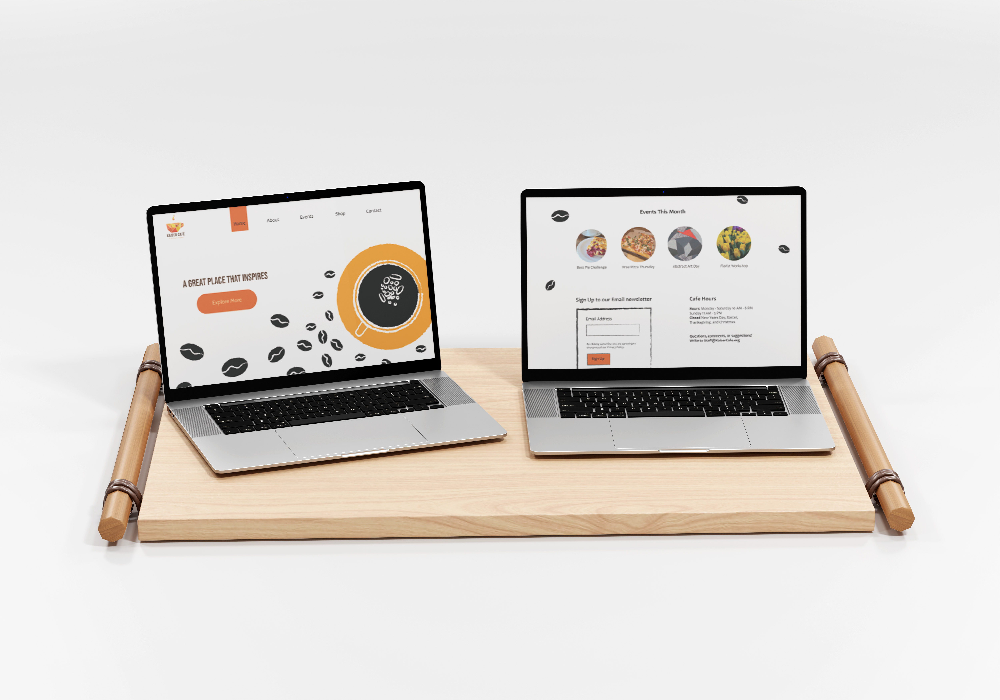
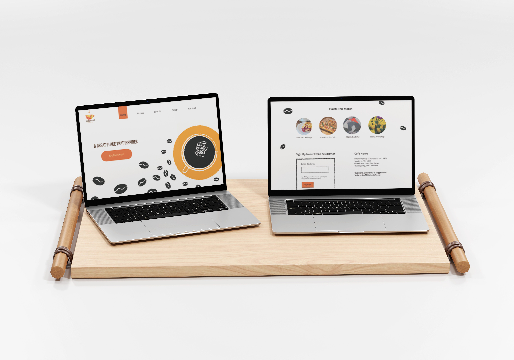

Cafe Branding
This branding project focused on creating a unique identity for a local café. The goal was to design a logo, packaging, and promotional materials that reflected the café's cozy atmosphere and commitment to quality ingredients.
 

The color palette was inspired by warm, earthy tones, and the logo was designed to evoke feelings of comfort and community. The branding materials included menus, coffee cups, and outdoor signage, all unified under a strong visual identity.